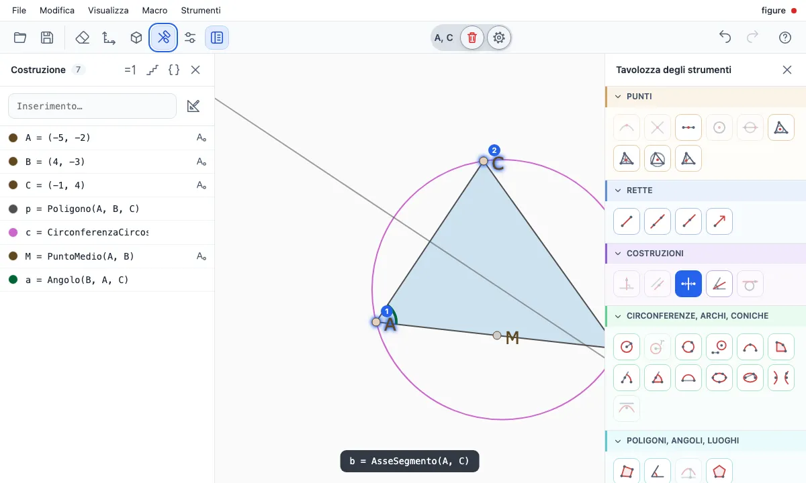
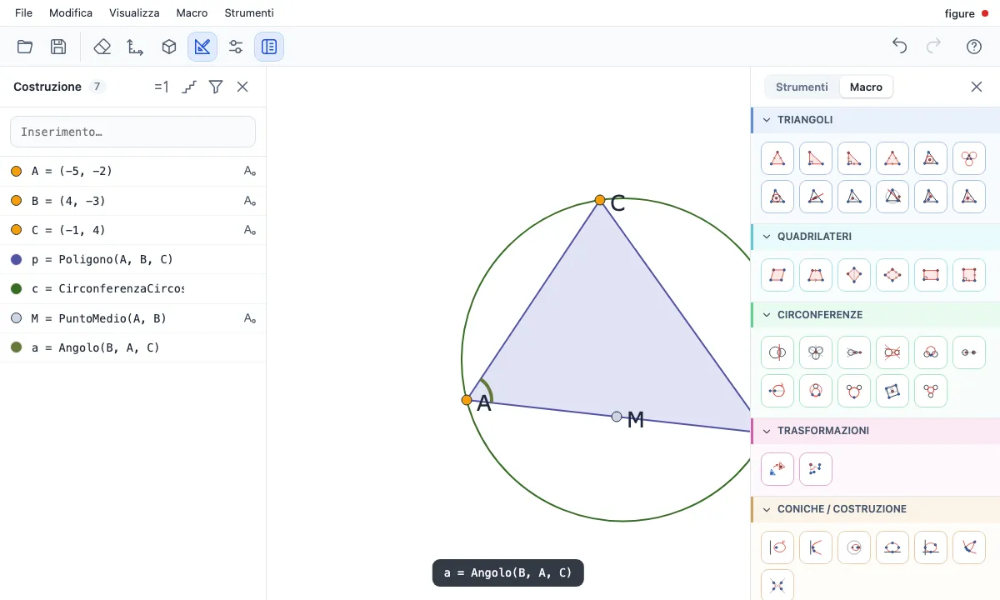
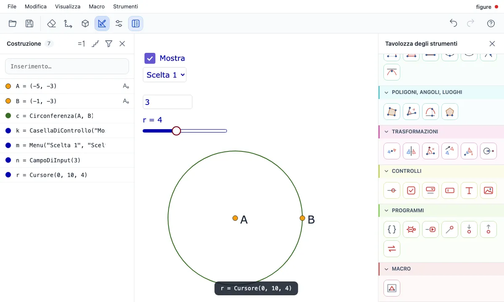

La tavolozza degli strumenti

Aprire la tavolozza
- della barra, o Visualizza › Tavolozza degli strumenti, apre a destra tutti gli strumenti, in vista, per famiglie con i colori dell’anello, e per ultime le macro della figura.
- In cima al pannello, due schede: Strumenti e Macro (fuori da DocTools). DocGeo ricorda quella scelta.
- La scheda Macro mostra Le mie macro, poi la libreria, una zona per cartella, ogni sezione nel suo colore. Come gli strumenti, le macro vi sono disattivate e spiegate nel suggerimento. Una macro scelta viene copiata nella figura e passa nella zona Macro della figura della scheda Strumenti.
- La tavolozza è visibile al primo avvio. Questo browser ricorda poi se è aperta o chiusa per gli avvii successivi.
- Occupa il posto del pannello delle proprietà: aprire l’uno chiude l’altro, senza lasciare lo strumento in uso.
- Un clic destro su un oggetto apre le sue proprietà al posto della tavolozza; chiudendole, la tavolozza ritorna.
- Un clic sul titolo di una famiglia la chiude o la apre; DocGeo se ne ricorda.
- Esc lascia lo strumento o la selezione, poi chiude la tavolozza.
- Su uno schermo piccolo, la tavolozza copre la figura e si chiude appena si sceglie uno strumento. Sotto i 500 px di larghezza, il suo pulsante passa dalla barra alla destra della riga di inserimento.

Costruire con uno strumento
- Un clic su uno strumento lo prende; una volta premuto, un nuovo clic lo lascia.
- La tavolozza contiene tutti gli strumenti dell’anello e altri ancora (contrassegno anello qui sotto). Le famiglie Piani e Solidi e gli strumenti marcati 3D compaiono solo nella vista 3D.
- La famiglia Controlli, assente dall’anello, posa cursori, caselle di controllo, menu, campi di input, testi e immagini.
- La famiglia Programmi, assente dall’anello, crea tartarughe, pulsanti e programmi di eventi (vedi Blocchi e tartaruga).
- Con la tavolozza aperta, un clic su un oggetto lo seleziona senza aprire l’anello, e un clic su uno spazio vuoto lo deseleziona. Gli strumenti che non accettano l’oggetto, o la selezione multipla, sono disattivati.
- Con la tavolozza aperta e senza strumento, la figura si manipola soltanto: un clic su uno spazio vuoto o su un incrocio non crea alcun punto. Per crearne uno, prendere lo strumento Punto, il primo della tavolozza.
- Passando su uno strumento, il suggerimento mostra la sua riga. Se gli oggetti selezionati gli bastano, l’oggetto che costruirebbe appare sbiadito.
- Il primo oggetto selezionato occupa qualsiasi posto che il suo tipo accetta: per una perpendicolare, la retta può venire prima del punto.
- Gli argomenti si selezionano anche nel pannello «Costruzione»: le righe degli oggetti che lo strumento accetta sono evidenziate in verde, le altre sbiadite. Vi si può selezionare anche un oggetto nascosto. Un punto vi si seleziona solo se esiste già, e due oggetti danno tutti i loro punti di intersezione. Finché lo strumento è attivo, un clic su una riga non la modifica. Una riga già selezionata diventa blu, con il suo posto nel comando (1, 2…).
- Lo strumento è persistente: dopo ogni oggetto, attende di nuovo il suo primo argomento. Il suo pulsante resta premuto e la barra mostra una fascia con Fatto.
- Un argomento selezionato con Maiusc viene tenuto: lo strumento lo riprende dopo ogni oggetto, finché non lo si lascia. Maiusc-clic sull’asse di una simmetria, poi un clic su ogni oggetto da trasformare; lo stesso per il centro di circonferenze concentriche. Il pulsante Tieni d della consegna fa lo stesso (col dito, per esempio); Cambia d lo richiede. Né per lo strumento dell’anello, né per gli oggetti selezionati prima dello strumento.
- Uscita: Fatto, Esc, la ✕ del suggerimento, un nuovo clic sullo strumento, la gomma, il passo dopo passo o un clic nella riga di inserimento. Annulla, ripristina, le proprietà e la vista 3D mantengono lo strumento.
Con una selezione
Gli oggetti selezionati prima diventano gli argomenti dello strumento scelto: vedi Costruire per selezione multipla.
Trasformare un oggetto
- Una trasformazione prende prima ciò che la definisce (centro, asse, vettore, circonferenza), poi il punto o l’oggetto da trasformare: segmento, retta, semiretta, vettore, poligono, circonferenza, arco, conica, grafico di funzione, luogo; in 3D anche un piano, una sfera, un poliedro (salvo per un’inversione).
- Sotto il puntatore, un punto ha la precedenza, poi l’oggetto; nel vuoto viene creato un punto. Al passaggio del puntatore l’immagine appare sbiadita.
- L’immagine è della stessa natura dell’oggetto: un poligono per un poligono, una circonferenza per una circonferenza… Un grafico di funzione, un luogo o un arco di conica hanno per immagine un luogo.
- In un’inversione, una retta o una circonferenza ha per immagine una circonferenza, o una retta se passa per il centro; un poligono, un poligono dai lati curvi.
- L’immagine riprende il colore, il riempimento, la dimensione, l’opacità e il tratteggio del suo oggetto. Non si trascina, ma vi si può porre un punto.
- Per trasformare più oggetti, selezionare il centro o l’asse con Maiusc (argomento tenuto).
Tutti gli strumenti
Per ogni strumento: ciò che si seleziona, poi la riga scritta.
Punti
-
PuntoIl punto che si tocca: libero in uno spazio vuoto, su un oggetto o all’intersezione di due oggetti.
A = (x, y) -
Punto su oggettoanelloUn oggetto: il punto su quell’oggetto, dove lo si tocca. Un clic su uno spazio vuoto non fa nulla.
Punto(c, t) -
IntersezioneanelloUn incrocio con un solo tocco: quel punto; oppure i due oggetti uno dopo l’altro: tutti i loro punti di intersezione, come in GeoGebra (due per una retta e una circonferenza, anche se non si intersecano ancora). Anche curve e luoghi.
Intersezione(a, b) -
PuntoMedioanelloDue punti, oppure un segmento.
PuntoMedio(A, B) -
CentroanelloUna circonferenza: il suo centro.
Centro(c) -
AltraIntersezioneDue oggetti, poi un punto già posto su una delle loro intersezioni: il punto d’intersezione più lontano da esso.
AltraIntersezione(a, b, P) -
IncentroTre punti, vertici di un triangolo: il centro della sua circonferenza inscritta.
Incentro(A, B, C) -
BaricentroTre punti: il baricentro del triangolo.
Baricentro(A, B, C) -
CircocentroTre punti: il centro della circonferenza circoscritta.
Circocentro(A, B, C) -
OrtocentroTre punti: l’ortocentro del triangolo.
Ortocentro(A, B, C)
Rette
-
SegmentoanelloDue punti, i suoi estremi.
Segmento(A, B) -
RettaanelloDue punti della retta.
Retta(A, B) -
SemirettaanelloDue punti: l’origine, poi un punto della semiretta.
Semiretta(A, B) -
VettoreanelloDue punti: l’origine, poi l’estremo.
Vettore(A, B)
Costruzioni
-
PerpendicolareanelloUn punto e una retta, nell’ordine che si preferisce. In 3D, una retta o un piano.
Perpendicolare(P, d) -
ParallelaanelloUn punto e una retta, nell’ordine che si preferisce.
Parallela(P, d) -
AsseSegmentoanelloDue punti, oppure un segmento.
AsseSegmento(A, B) -
BisettriceanelloTre punti: un punto del primo lato, il vertice, un punto del secondo lato.
Bisettrice(A, O, B) -
TangenteUn punto, poi una circonferenza, una conica o il grafico di una funzione. Lo strumento dà la tangente n. 1; cambia questo numero in 2 nella sua riga per l’altra.
Tangente(P, c, 1)
Circonferenze, archi, coniche
-
Circonferenza (centro e punto)anelloIl centro, poi un punto della circonferenza.
Circonferenza(O, A) -
Circonferenza (centro e raggio)anelloSolo il centro: nell’anello, tenere premuta l’icona, muovere il mouse o il dito e rilasciare per fissare il raggio. Dal menu o dalla tavolozza, il raggio iniziale è di circa 150 pixel. Si cambia poi trascinando la circonferenza o nella sua riga.
-
CirconferenzaCircoscrittaanelloTre punti della circonferenza.
CirconferenzaCircoscritta(A, B, C) -
CompassoDue punti che danno il raggio, poi il centro.
Compasso(A, B, O) -
Circonferenza (centro, direzione e raggio)3DIl centro, poi una retta (l’asse) o un piano (parallelo alla circonferenza), pavimento compreso. Raggio di circa 150 pixel.
Circonferenza(O, 3.8, d) -
Circonferenza (asse e punto)3DUna retta, l’asse, poi un punto della circonferenza.
Circonferenza(d, P) -
ArcoTre punti: l’inizio, un punto di passaggio, la fine (in 3D, nel loro piano). Oppure una circonferenza o un’ellisse, poi l’inizio e la fine (senso antiorario).
Arco(A, B, C),Arco(c, P, Q) -
SettoreCome per l’arco, tre punti, o una circonferenza o un’ellisse e due punti: il settore che delimita.
Settore(A, B, C),Settore(c, P, Q) -
ArcoCentroIl centro, l’inizio, poi un punto della semiretta dove l’arco si ferma (senso antiorario). In 3D, l’arco dell’angolo AMB, nel suo piano.
ArcoCentro(M, A, B) -
SettoreCentroCome
ArcoCentro: il settore.SettoreCentro(M, A, B) -
SemicirconferenzaDue punti, estremi del diametro: la semicirconferenza a sinistra di [AB].
Semicirconferenza(A, B) -
ConicaCinque punti della conica. Dal secondo in poi, l’anteprima mostra la conica più vicina a una circonferenza.
Conica(A, B, C, D, E) -
EllisseI due fuochi, poi un punto dell’ellisse.
Ellisse(F, G, P) -
IperboleI due fuochi, poi un punto dell’iperbole.
Iperbole(F, G, P) -
ParabolaIl fuoco, poi la direttrice.
Parabola(F, d)
Poligoni, angoli, luoghi
-
PoligonoanelloI vertici uno alla volta, poi di nuovo il primo per chiudere.
Poligono(A, B, C) -
AngoloanelloTre punti: un punto del primo lato, il vertice, un punto del secondo lato.
Angolo(A, O, B) -
LuogoanelloUn punto o una retta che dipende da un punto su oggetto: il luogo del punto quando questo punto su oggetto percorre il suo oggetto; per una retta, il suo inviluppo, la curva tangente alle sue posizioni.
Luogo(M, P),Luogo(d, P) -
PoligonoRegolareDue vertici consecutivi: lo strumento dà un quadrato; cambia il numero di lati nella sua riga.
PoligonoRegolare(A, B, 4)
Trasformazioni
-
Simmetria centraleanelloIl centro, poi il punto o l’oggetto da trasformare.
Simmetrico(O, P) -
Simmetria assialeanelloL’asse, poi il punto o l’oggetto da trasformare.
Simmetrico(d, P) -
RotazioneIl centro, poi il punto o l’oggetto: un quarto di giro, che si cambia nella sua riga.
Rotazione(O, P, 90) -
TraslazioneIl vettore, poi il punto o l’oggetto.
Traslazione(u, P) -
OmotetiaIl centro, poi il punto o l’oggetto: un rapporto di 2, che si cambia nella sua riga.
Omotetia(O, P, 2) -
InversioneLa circonferenza d’inversione, poi il punto o l’oggetto.
Inversione(c, P)
Piani
-
Piano3DTre punti, oppure un punto e una retta.
Piano(A, B, C) -
PianoParallelo3DUn punto e un piano (pavimento compreso): il piano parallelo passante per il punto.
PianoParallelo(A, p) -
PianoOrtogonale3DUn punto e una retta: il piano ortogonale alla retta.
PianoOrtogonale(A, d)
Solidi
-
Sferaanello3DIl centro, poi un punto della sfera.Nell’anello degli strumenti di un punto, si trova accanto alle circonferenze.
Sfera(O, A) -
Cilindro3DDue punti, estremi dell’asse. Raggio di circa 150 pixel.
Cilindro(A, B, 3.8) -
Cono3DIl centro della base, poi il vertice. Raggio di circa 150 pixel.
Cono(A, B, 3.8) -
Cubo3DDue punti di uno stesso piano o della stessa quota, altrimenti tre punti (vedi il 3D).
Cubo(A, B, C) -
Prisma3DUn poligono, la base, poi un punto, vertice della faccia opposta.
Prisma(p, P) -
Piramide3DUn poligono, la base, poi il vertice.
Piramide(p, S) -
Sezione3DUn solido (sfera, cilindro, cono, poliedro) e un piano, nell’ordine che si preferisce.
Sezione(s, p) -
Sviluppo3DUn cubo, un prisma o una piramide: il suo sviluppo piano.
Sviluppo(c, 1)
Controlli

-
CursoreIl punto del cursore, da −5 a 5 con passo 0,1.
Cursore(-5, 5, 1) -
CasellaDiControlloGli oggetti che mostra, se ce ne sono (un altro clic ne toglie uno), poi un punto vuoto: la casella, spuntata.
CasellaDiControllo("Mostra", a, c) -
MenuIl punto del menu, con tre scelte da riscrivere nella sua riga. Il suo valore è il numero della scelta.
Menu("Scelta 1", "Scelta 2", "Scelta 3") -
CampoDiInputIl punto del campo. Contiene un numero, che le formule leggono con il suo nome.
CampoDiInput(1) -
TestoIl punto del testo, da riscrivere nella sua definizione.
"Testo" -
ImmagineUn punto o un luogo vuoto, poi il file: l’immagine tra questo punto e un secondo, creato alla sua destra. In 3D, un terzo punto, il suo angolo superiore sinistro, la posa in piano orizzontale, e ruota con la figura.
Immagine(A, B)
Un controllo posato apre le sue proprietà; chiudendole torna la tavolozza. Il tasto destro lo sposta senza azionarlo; con il dito, premere e trascinare lo sposta mentre le sue proprietà sono aperte. I punti di un’immagine ne danno la dimensione e la legano alla costruzione; trascinarla li sposta insieme se sono liberi. Un controllo si colloca a passi di 10 pixel, il che facilita gli allineamenti, tranne un’immagine legata ai suoi punti.
Una casella o un menu agisce tramite la condizione di visualizzazione degli oggetti: vedi Visibile se.
Programmi
-
Nuovo programmaApre un programma vuoto nelle proprietà.
-
TartarugaUn punto, o un posto vuoto che ne crea uno: la tartaruga che parte da quel punto, aperta a blocchi.
TURTLE_INIT("A", A) -
PulsanteIl posto della sua freccia: il pulsante, con il suo programma aperto a blocchi.
Pulsante("Esegui") -
Quando l’oggetto viene trascinatoUn punto trascinabile: il programma eseguito quando viene trascinato, aperto a blocchi.
-
Quando l’oggetto viene premutoUn punto trascinabile: il programma eseguito quando viene premuto, aperto a blocchi.
-
Quando l’oggetto viene rilasciatoUn punto trascinabile: il programma eseguito quando viene rilasciato, aperto a blocchi.
-
Quando il valore cambiaUn’espressione: il programma eseguito quando il suo valore cambia, aperto a blocchi.
Macro della figura
-
Nuova macroGli oggetti selezionati come primi iniziali: la definizione di una macro; seguono le macro della figura (vedi Le macro).
Le trasformazioni costruiscono l’immagine di un punto o di un
oggetto (vedi
Trasformare un oggetto).
Solo da tastiera: PuntoFisso, Vertice,
Cursore, Lista, le intersezioni nello
spazio, Ellisse(F, G, a) e
Iperbole(F, G, a) (vedi
I comandi).